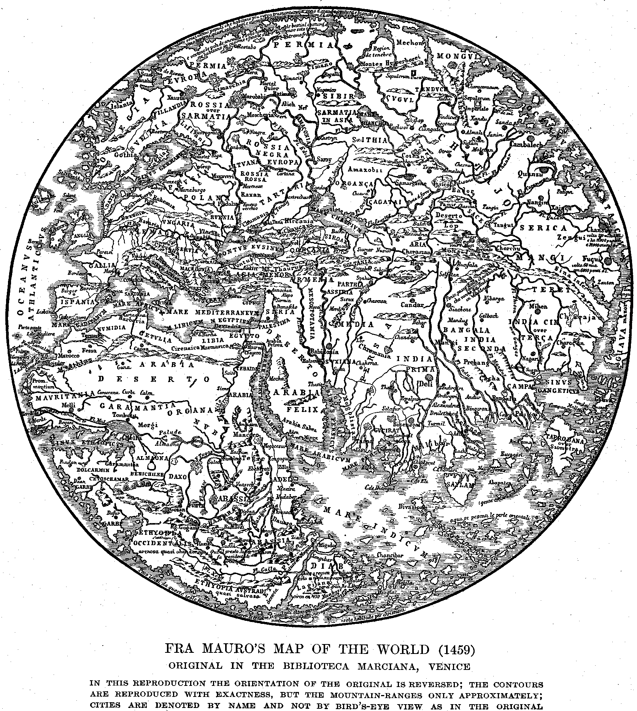

|
| A B C D E F G H I J K L M N O P Q R S T U V W X Y Z |
The classic historians of geography, Alexander von Humboldt, Carl Ritter, and Oscar Peschel, never forgot to acknowledge how greatly their science was indebted to the Church. Of course the beginnings of all profane knowledge can be traced back to the time when "priest" and "scholar" meant one and the same thing. But with geography especially the Church had very close relations — relations which are readily explained by the nature of this science and the course of its evolution.
The object of geography is to extend our knowledge of the earth's surface and to determine the position of our planet in relation to cosmic and physical phenomena. For the fulfilment of its first and more important task, the accumulation of geographic information, the prerequisites were at hand even in the earlier days. It needed only intrepid men to penetrate from known to unknown countries. But the powerful incentive of a purely scientific interest was still lacking. The motives that led to geographical progress at that time were greed and lust of conquest, as well as a far nobler motive than these — the spread of Christianity. To this mission the most intelligent, the most upright, and the most persevering of all explorers devoted themselves. Consequently, it was they who achieved the greatest success in the field of discovery during the Middle Ages and far into later days, right up to the time when modern scientific research became its successor. The second purpose, geographical theory, commonly called universal geography, could only be profitably attempted after adequate progress had been made in the auxiliary sciences of astronomy, mathematics, and physics. But herein, too, medieval clerical scholars were the first to show their clearsightedness. For them there was no more attractive pursuit than to trace the vestiges of the Creator in all the marvellous harmony of the universe. How, then, was it possible that the laws governing this globe of ours could escape their search for truth? Of course, they could only have a presentiment of these laws but frequently enough their ideas came very close to the precise results of the great modern scientists, equipped with the best of modern instruments. Again, one of the greatest of them all was a theologian — Copernicus.
Under these circumstances it was inevitable that the part contributed by the Church to this branch of human knowledge should be of great importance, as the most distinguished geographers bear witness. We may therefore rightfully present a coherent picture thereof. To this end we have divided the subject according to the following aspects:
The confines of the world as known to geographers at the beginning of the Christian Era are shown in the famous geography of the Alexandrian, Claudius Ptolemæus (150 A.D.). Southwards they extended to the White Nile and the northern boundary of the Sudan; in the west they included the Canary Isles and the British Isles; to the north they reached as far as the German Seas and thence over the Low Countries of Russia and the Aral Sea to the sources of the Indus and the Ganges. In the Orient they took in Arabia and the coasts of India and Indo-China as far as the Archipelago. Their certain knowledge, however, did not extend beyond the boundaries of the Roman Empire when it was at its zenith. At the very time when this empire was falling to pieces, it was overrun by the peaceful missionaries of the new spiritual power, Christianity. Even in the first few hundred years they found their way to the Far East. According to tradition, the Apostle Thomas himself reached Meliapur. In any case Christianity had been spread in Malabar, on the coast of Coromandel, in Socotra and Ceylon as early as the fourth century, as Cosmas Indicopleustes informs us in his "Christian Topography", a very important work from a geographic standpoint. Even in Abyssinia and in Southern Arabia the Faith found a footing. Simultaneously the frontier lands on the Rhine and the Danube were opened up. The subsequent centuries were spent in exploring the North. To this end a centre of operations was established which, for the purpose of the scientific discoverer could not have been more wisely selected in the conditions then prevalent. Then followed the foundation of monasteries in the British Isles which sent out in all directions their monks, well equipped with learning and well fitted to become the pioneers of culture. To these missionaries we owe the earliest geographical accounts of the northern countries and of the customs, religions, and languages of their inhabitants. They had to define the boundaries of the newly established dioceses of the Church. Their notes, therefore, contained the most valuable information, though the form was somewhat crude, and Ritter very justly traces the source and beginning of modern geography in these regions back to the "Acta Sanctorum". The world is indebted to the diaries of St. Ansgar (died 865) for the first description of Scandinavia. The material in them was employed later on by Adam of Bremen in his celebrated work "De situ Daniæ". The accounts of these countries that Archbishop Axel of Lund (died 1201), the founder of Copenhagen, furnished to the historian Saxo Grammaticus were also of great value. Reports brought in by monks enabled Alfred the Great (901) to compile the first description of Slavonic lands. Then followed the Chronicle of Regino of Prüm (907-968) — a work equally important for the historian and the geographer, as it contains the reports of St. Adalbert, who made his way into Russia in 961. Of similar merit are the historical works of the monk Nestor of Kiev (died 1100) and the country pastor Helmold (died 1170). Bishops Thietmar of Merseburg (died 1019) and Vincent Kadlubeck of Cracow (1206-18) bring us the earliest information regarding the geography of Poland, while the letters of Bishop Otto of Bamberg contain the earliest description of Pomerania. In like manner the geography of Prussia, Finland, Lapland, and Lithuania begins with the evangelization of these countries. And even if it be difficult today to estimate at their proper value the discovery of these regions now so familiar to us, the first voyages of civilized Europeans on the high seas, which started from Ireland, will always challenge our admiration. Groping from island to island, the Irish monks reached the Faroe Isles in the seventh century and Iceland in the eighth. They thus showed the Northmen the route which was to bring about the first communication between Europe and America, and finally set foot on Greenland (1112). The earliest accounts of these settlements, with which, owing to unpropitious political and physical conditions, permanent intercourse could not be maintained, we owe to Canon Adam of Bremen, to the reports sent by the bishops to their metropolis at Drontheim (Trondhjem), and to the Vatican archives.
Meanwhile, communication with the East had never ceased. Palestine was an object of interest to all Christendom, to which the eyes of the West had been turned ever since the days of the Apostles. Thousands and thousands of pilgrims flocked thither in bands. Not a few of them possessed sufficient ability to describe intelligently their experiences and impressions. Thus the so-called "Itineraries", or guide-books, by no means confined themselves to a description of the Sacred Places. Besides giving exact directions for the route, they embraced a great deal of information about the neighbouring countries and peoples, about Asia Minor, Egypt, Arabia, Persia, and even India. These works were very popular reading and undoubtedly infused an entirety new element into the study of geography in those days. A still greater stimulus was given to it by the Crusades — those magnificent expeditions which, inspired and supported by the Church, brought huge masses of people into contact with the Orient. They made a knowledge of the lands they sought to conquer, a commonplace in Europe. They were the means of spreading the geographic theories and methods of Arabian scholarship, at that time quite advanced, thereby placing the research of Western scholars on entirely new bases, and putting before them new aims and objects. Finally, in the effort to secure new allies for the liberation of the Holy Land, they brought about intercourse with the rulers of Central Asia. This intercourse was of the utmost importance in the history of medieval discoveries.
Stray communities of Christians were scattered throughout the interior of Asia, even in the early centuries, thanks to the zeal of the Nestorians. It is true that they were separated from Rome and were suppressed by rigorous persecutions in China as early as the eighth century. But even during the Crusades some Mongolian tribes showed such familiarity with the new faith that the popes had great hopes of an alliance with these nations. The general council held at Lyons in 1245 under Innocent IV decided to send out legates. Men duly qualified for these missions were found among the newly established Orders of St. Francis and St. Dominic. The Dominican Ascalinus in 1245 reached the court of the Khan of Persia on the eastern shore of the Black Sea after a voyage of fifty-nine days, but his errand was fruitless. His companion, Simon of St-Quentin, wrote an account of the voyage, as did also his great contemporary, Vincent of Beauvais. The enterprises of the Franciscans were politically more successful, and far more productive of scientific results. Under the leadership of John de Piano Carpini of Perugia, they travelled through Germany, Bohemia, Poland, and Southern Russia as far as the Volga, and thence to the Court of the Grand Khan at Karakorum (1246). Their reports embrace the political conditions, ethnography, history, and geography of the Tatar lands. They were excellently supplemented by Friar Benedict of Poland of the same order in regard to the Slav countries. Both these works, however, are surpassed by the Franciscan William Rubruck (Rubruquis) of Brabant, whose report Peschel pronounces to be "the greatest geographical masterpiece of the Middle Ages". He was the first to settle the controversy between medieval geographers as to the Caspian Sea. He ascertained that it was an inland lake and had not, as was supposed for a long while, an outlet into the Arctic Ocean. He was the first Christian geographer to bring back reliable information concerning the position of China and its inhabitants. He knew the ethnographic relations of the Hungarians, Bashkirs, and Huns. He knew of the remains of the Gothic tongue on the Tauric Chersonese, and recognized the differences between the characters of the different Mongolian alphabets. The glowing pictures he drew of the wealth of Asia first attracted the attention of the seafaring Venetians and Genoese to the East. Merchants followed in the path he had pointed out, among them Marco Polo, the most renowned traveller of all times. His book describing his journeys was for centuries the sole source of knowledge for the geographical and cartographical representations of Asia. Side by side with Marco Polo, friars and monks pursued untiringly the work of discovery. Among them was Hayton, Prince of Annania (Armenia), afterwards Abbot of Poitiers, who in 1307 made the first attempt at a systematic geography of Asia in his "Historia orientalis". Also the Franciscans stationed in India who followed the more convenient sea route to China at the end of the thirteenth century. Special credit is due to John of Monte Corvino (1291-1328), Odoric of Pordenone (1317-31), whose work was widely circulated in the writings of JohnMandeville, and John of Marignolla. Of India, also, the missionaries gave fuller information. Menentillus was the first to prove the peninsular shape of the country and, in contradiction to Ptolemy, described the Indian Ocean as a body of water open to the South. The Dominican Jordanus Catalani (1328) records his observations on the physical peculiarities and natural history of India. At the same time more frequent visits were made to Northern Africa and Abyssinia; and towards the middle of the fourteenth century settlements were made in the Canary Isles.
However, the immense tracts of land in the interior of Asia were soon closed again to scientific investigation. With the fall of the Mongol dynasty, which had been favourably disposed to Christians, China became forbidden ground to Europeans. But the East remained the goal of Western trade, to which the missions had shown the way. The rich lands on the Indian Ocean remained open, and henceforth they were the objective point of all the great exploring expeditions, undertaken by the sea-loving Portuguese, which culminated in the discovery of America by Columbus. It is well known how much these undertakings were furthered by the all-pervading idea of spreading Christianity. The main object of Henry the Navigator in equipping his fleet with the revenues of the Order of Christ was the conversion of the heathen. He was working to the same purpose on the continent of Africa, where he sought to establish communications with the Christian ruler of Abyssinia. His efforts led to the circumnavigation of Africa by his successors, and to the systematic exploration of the highland states of East Africa begun by Portuguese missionaries in the sixteenth century. Columbus, too, was regarded in his time as pre-eminently the envoy of the Church. Furthermore, the strange results expected from his expedition and his own projects were the last echo of all the aspirations of medieval Christendom, which contemplated a way to the Kings of Cathay (China) whose disposition to embrace Christianity had been repeatedly emphasized by Toscanelli, as well as the discovery of the Earthly Paradise, which Columbus placed somewhere near the gulf of Paria, the recovery of the Holy Sepulchre by means of the treasures he expected to find, and, finally, the extension of the Kingdom of God over the entire earth before the approaching end of the world.
Philosophical speculation also had a share in the magnificent success that crowned the practical work of the Middle Ages. Although geography as a science for its own sake was no more the chief purpose of this speculation than exploration for its own sake was that of the missionaries, it had arrived at truths that are admitted today, even when tested by the light of modern research — truths that must be recognized as real progress. As might be expected, in the early centuries of the Church men strove above all things to reconcile deductions from the observation of the facts of nature with the beliefs that were then supposed to be taught in Holy Scripture. The earliest Christian literature was so predominantly exegetical that the teachings of the ancients were always tested in order to see whether they were in harmony with Holy Writ. Hence it was that several of the Fathers pronounced in favour of the theory of the flatness of the earth's surface which had been put forward in later Roman cosmographies. Among the advocates of this error were Theodore of Mopsuestia, St. John Chrysostom, Severian of Gabala, Procopius of Gaza, and others. Cosmas Indicopleustes advanced an especially grotesque elaboration of this doctrine. In his exaggeratedly narrow interpretation of the phraseology of Holy Writ he claimed that the world was constructed in the shape of the Tabernacle of the Covenant in the Old Testament. But long before his day there were men who believed in the sphericity of the earth. It was recognized by Clement and Origen; Ambrose and Basil also upheld it. Gregory of Nyssa even sought to explain the origin of the earth by means of a physical experiment, and advanced hypotheses that come very close to the modern theories of rotation. Augustine declared that the doctrine of the sphericity of the earth in no way conflicted with Holy Writ, and later authors, especially the Venerable Bede, also attempted to prove it on scientific grounds. For a considerable period the question of the Antipodes was beset with controversy. It was absolutely denied by Lactantius and several others, principally on religious grounds, as the people of the Antipodes could not have been saved. The learned Irishman, Bishop Virgilius, patron saint of Salzburg (died 784) was the first to openly express the opinion that there were men living beyond the ocean. Individual physiographical phenomena also began to come under the observation of the learned, such as the influence of the moon on the tides, the erosive action of the sea, the circulation of water, the origin of hot springs and volcanoes, the division of land and water, the position of the sun at different latitudes. The learning and opinions of the first few hundred years were comprehensively set forth in the tremendous work of Isidore of Seville (died 636), the "Etymologiæ" or "Origines", which for a long time enjoyed unlimited authority. During the next few centuries, which were comparatively barren of literary achievements, the only men to attain any celebrity, besides Bede and Virgilius of Salzburg, were the anonymous geographer of Ravenna (c. 670), the Irish monk Dicuil, author of the well-known "Liber de mensurâ Orbis terræ" (c. 825), and the learned Pope Sylvester (999-1003), otherwise known as Gerbert of Aurillac, the most illustrious astronomer of his century. The oldest cartographic documents we have also date from the same period. They rely for their information on the earth's surface substantially on the Roman methods of delineation. The lost map of the world as known to the Romans can now be reconstructed only by means of the medieval Mappœ mundi; consequently, they exhibit all the deficiencies of the model they followed; they are circular in plan and were drawn neither on projection nor according to scale, the boundaries of the provinces being indicated by straight lines. The central point was in the Ægean Sea; at the time of the Crusades it was transferred to Jerusalem, the East being at the top of the maps. In addition to adhering to the Roman form, these maps have preserved for us also the contents of the Roman maps; and therein lies the principal value of these interesting documents. They were often draughted with the greatest and most artistic care. Especial importance attaches to the map of the world made by the Spanish monk Beatus. Numerous copies of this show the entire area of the globe as known in 776 after Christ. Of the big wall maps only those in the cathedral at Hereford and the nunnery at Ebsdorf have survived. Both of them are of the latter half of the thirteenth century and are representative of the ancient type of map. Small atlases were largely circulated in cosmographical codices. These are known as Macrobius atlases, Zone atlases, Ranulf atlases, and so forth. Special maps have also come down to us; two of them, showing south-eastern Europe with Western Asia and Palestine are even attributed to St. Jerome. There is a representation of Palestine in mosaic in the church at Madaba; this dates from the middle of the sixth century. The English monk, Matthew Paris, draughted same modern maps in the thirteenth century which were quite free from the influence of Ptolemy and the Arabians.
But geographical problems made great and unexpected progress when they received a more scientific basis. This basis was provided by the scholastics when they made the Aristotelean system the starting-point of all their philosophical researches. Their thorough logical training and their strict critical method gave to the work of these commentators on Aristotle the value of original research, which strove to comprehend the entire contemporary science of nature, As at the same time the Almagest of Ptolemy was brought to light again by the presbyter, Gerard of Cremona (1114-87), there was not a single problem of modern physical and mathematical geography the solution of which was not thus attempted. The fact that the writings of Aristotle and Ptolemy, on which they founded their investigations, had already passed through the hands of Arabian scholars, who, however, probably received them at some time from Syrian priests, proved of advantage to the consequent geographical discussions. The most eminent representative of physical studies was Albertus Magnus; of mathematics, Roger Bacon. Their precursor, William of Conches, had already given evidence of independent conception of the facts of nature in his "Philosophia Mundi". Also Alexander Neckham (1150 to about 1227), Abbot of Cirencester, whose "Liber de naturâ rerum" contains the earliest record of the use of the mariner's compass in navigation and a list of remarkable springs, rivers, and lakes. Blessed Albertus Magnus (1193-1280), a master with whom in the universality of his knowledge only Alexander von Humboldt is comparable, opened up to his contemporaries the entire field of physiography, by means of his admirable exposition of Aristotle, laid the foundations of climatology, botanical geography, and, in a certain sense, even of comparative geography. His work "De cœlo et mundo" treats of the earth as a whole; his "libri meteororum" and "De passionibus aeris" include meteorology, hydrography, and seismology. In the "De naturâ locorum" he enlarges upon the system of the zones and the relations between man and the earth. He furnished proofs of the sphericity of our planet that are still popularly repeated today; be calculated accurately the duration of the day and the seasons in the different quarters of the globe. Ebb and flow, volcanology, the formation of mountain-ranges and continents — all these subjects furnish him material for clever deductions. He carefully recorded the shifting of coastlines, which men at that time already associated with the secular upheaving and subsidence of continents. He also ascertained the frequency of earthquakes in the neighbourhood of the ocean, He closely observed fossilized animals. He knew that the direction of the axes of mountain-ranges influenced the climate of Europe, and, on the authority of Arabian writers, he was the first to refute the old error that the intertropical surface of the earth must necessarily be quite parched. His fellow-friar, Vincent of Beauvais (died 1264), also proved himself to be a very keen observer of nature. A great mass of geographical material is stored up in his "Speculum naturale". Among other things he recognized that mountain-ranges constantly lose in height, owing to the influence of climate and of rain, and that in high altitudes the temperature falls because of the decrease of atmospheric density. Finally, we must mention the original views of St. Thomas Aquinas on geography, as well as those of the laymen Ristoro of Arezzo, Brunetto Latini (1210-94), his great disciple, Dante (1266-1321), and, lastly the "Book of Nature" by Conrad of Megenberg, canon of Ratisbon (1309-1378). For all of these Albertus Magnus had opened the door to the rich treasure-house of Greek and Arabian learning. Still more far-reaching in their results were the labours of the scholars who applied themselves principally to mathematical geography. At the bead of them all stands Roger Bacon, the "Doctor Mirabilis" of the Order of St. Francis (1214-94). Columbus was emboldened to carry out his great project on the strength of Bacon's assertion that India could be reached by a westerly voyage — a claim based on mathematical computation. Even before Ptolemy's "Geography" had been rediscovered, Bacon attempted to sketch a map, determining mathematically the positions of places, and using Ptolemy's Almagest, the descriptions of Alfraganus, and the Alphonsine Tables. Peschel pronounces this to be "the greatest achievement of the scholastics". Cardinal Pierre d'Ailly (1350-1425), whose "Imago Mundi" was also a favourite book of Columbus's, founded it on Bacon's works. It is to him and Cardinal Filiaster that Western civilization owes the first Latin translation of Ptolemy's "Geography", which Jacopus Angelus finished and dedicated to Pope Alexander V (1409-10). The circulation of this book created a tremendous revolution, which was particularly beneficial to the development of cartography for centuries thereafter. As early as 1427 the Dane Claudius Clavus added to Filiaster's priceless manuscript of Ptolemy's work his map of Northern Europe, the oldest map of the North which we possess. Domnus Nicolaus Germanus, a Benedictine (of Reichenbach?) (1466), was the first scholar who modernized Ptolemy by means of new maps and made him generally accessible. The Benedictine Andreas Walsperger (1448) made a map of the world in the medieval style. That of the Camaldolese Fra Mauro (1457) is the most celebrated of all monuments of medieval cartography. It was already enriched by data furnished in Ptolemy's work. The map of Germany designed by Cardinal Nicholas of Cusa (1401-64), a pupil of Toscanelli (1387-1492), was printed in 1491. This prelate was the teacher of Peuerbach (1432-61), who in turn was the master of Regiomontanus (1436-67), the most illustrious astronomer since Ptolemy. Cardinal Bessarion enabled Regiomontanus to study Greek, and Pope Sixtus IV (1474) entrusted the reformation of the Calendar to him. We must also mention Æneas Sylvius (afterwards Pope Pius II) and the papal secretaries Poggio and Flavio Biondo, who made several valuable contributions to the science of geography, also Cardinal Bembo and the Carthusian Reisch (1467-1525).
In order to set forth properly the achievements in discovery and research in modern times by Catholic scholars, we adopt Peschel's arrangement. He divides this period of the development of geography into two main epochs:
We cannot set down all the names of priests and missionaries which we find in both these periods. Their chief usefulness lay in their contributions to the general knowledge of various countries and races. But they also made contributions of the greatest value to the theoretical development of our science. They were the first and foremost promoters of many studies auxiliary to geography that sprang Up in the course of time, such as ethnology, meteorology, volcanology, and so forth.
Even on their earliest voyages the great discoverers took with them learned priests. These men wrote glowing accounts of the wonders they saw in the newly discovered lands to their brethren at home, so that they might spread the information broadcast. In a short time monastic settlements sprang up in the great colonial possessions of Spain and Portugal. The Dominicans were the first missionaries to America, and Franciscans are heard of in India as early as 1500, while the Augustinians accompanied Magellan to the Philippines in 1521. They were equipped with the best available aids and assistants. Among the Jesuits especially these received a thorough and systematic training. The Jesuits established missions on the Congo, in 1547, in Brazil, in 1549, in Abyssinia, 1555, in South Africa, 1559, in Peru, 1568, in Mexico, 1572, in Paraguay, 1586, and in Chile, 1591. They even penetrated into the old heathen civilizations of Japan (1549) and China (1563).
Soon after the discovery of the West Indies, the Hieronymite Fray Roman wrote a valuable study of the mythology of their inhabitants, which Ferdinand Columbus incorporated in his "Vida del Almirande". It became the corner-stone of American ethnology. The Dominican Bias de Castillo explored the crater of Masaya in Nicaragua, in 1538, which Oviedo also visited and described later. The much-admired work "De rebus oceanicis et novo orbe" was written by Peter Martyr d'Anghierra (1475-1526), prior of Granada, and a friend of Columbus. It is especially noteworthy for its intelligent observations on ocean currents and volcanoes, which its author doubtless derived from missionaries. A most signal contribution was the "Historia natural y moral de las Indias" (1588), by the Jesuit José d'Acosta (1539-1600), who lived in Peru from 1571 to 1588, and proved himself one of the most brilliant writers on the natural history of the New World and the customs of the Indians. The first thorough exploration of Brazil was made by Jesuit missionaries, under Father Ferre (1599-1632) and others. Starting from Quito, Franciscans visited the region around the source of the Amazon in 1633. Father Laureano de la Cruz penetrated as far as the River Napo in 1647, and in 1650 made a journey by boat as far as the Pará River.
To missionaries, also, we owe important information concerning the interior of Africa during the sixteenth, and at the beginning of the seventeenth, century. The Portuguese priests Alvarez and Bermúdez accompanied the embassy of King Emanuel to King David III of Abyssinia. They sent home valuable reports regarding the country. They were followed by the Jesuits. A. Ternández crossed Southern Abyssinia, as far as Melinde, in 1613, and set foot in regions which until recently were closed to the Europeans. Father Paez (1603) and Father Lobo (1623) were the first to reach the source of the Blue Nile. As early as the middle of the seventeenth century the Jesuits drew a map of Abyssinia on the information supplied by these two men and by Fathers Almeida, Méndez, and Télez. It was the best map of Abyssinia until the time of Abbadie (1810-97). At the request of Bishop Migliore of S. Marco, the Portuguese Duarte López (1591) wrote an important description of the Congo territory. The "Etiopia Oriental" (1609) by the Dominican Juan dos Santos was an authority on the lake country and eastern Central Africa until Livingstone's transcontinental expedition. The Jesuit missionaries Machado, Affonso, and Paiva in 1630 even thought of establishing communication between Abyssinia and the Congo territory. The Arabian Leo Africanus, whom Pope Leo X had educated, and who was named after him, wrote a book describing the Sudan. It was published by Ramusio in 1552 and was considered the only reliable authority on this country till the nineteenth century. More careful research led to the sending of missionaries to Central Asia. The Augustinian González* de Mendoza made the first really intelligible map of China in 1585, and Father Benedict Goes opened the land route thither, after a perilous journey from India, in 1602. Thereupon the Jesuits Ricci and Schall, both learned mathematicians and astronomers, prepared the cartographic survey of the country. Ricci (1553-1610), as the "geographer of China", is justly compared to Marco Polo, the "discoverer of China". Using his notes, Father Trigault issued an historical and geographical treatise on China in 1615. Father Andrada visited Tibet in 1624, and published, in 1626, a book describing it which was afterwards translated into five languages. Borrus and Rhodes published reports on Farther India.
The science of cartography now made a quite Unexpected advance, due to the frequent and repeatedly enlarged editions of Ptolemy's work that were issued by the Benedictine Ruysch (1508), by Bernardus Sylvanus (1511), Waldseemüller (1513), and others. Canon Martin Waldseemüller's map of the world (St-Dié, 1507) was his most distinguished achievement. It was the first to give to the New World the name of America. Bishop Olaus Magnus, one of the most illustrious geographers of the Renaissance, made a map of Northern Europe in 1539. He also undertook a long journey in the North in 1518-19 and was the first man to propound the idea of a north-east passage. The great map-makers Mercator and Ortelius also received devoted help and encouragement from ecclesiastics.
The most important result of the astronomical and physiographical observations made during this period was the discovery and establishment of the heliocentric system by Copernicus, canon of Königsberg (1473-1543). Celio Calcagnini (1479-1541) had prepared the way for this theory. In spite of the fact that his hypothesis was in direct contradiction to hitherto accepted interpretations of Holy Writ, such high dignitaries of the Church as Schomberg, Giese, Dantiscus, and others encouraged Copernicus to make public his discovery. Moreover Pope Paul III graciously accepted the dedication of the work "Be revolutionibus orbium cœlestium" which appeared in 1543. Among the foremost astronomers was the Jesuit Scheiner (1575-1650). He and his assistant Cysatus were the first to notice the spots on the sun (1612), and founded the science of heliographic physics, of which Galileo had not even thought. The Capuchin monk Schyrl (Schyrlæus) de Rheita built a terrestrial telescope in 1645 and drew a chart of the moon. Nor did isolated physical phenomena pass unnoticed; attempts had already been made to classify them systematically. Giovanni Botero (1560-1617), secretary to St. Charles Borromeo, ranked with Peter Martyr among the first writers on deep-sea research — or thalassography, and is considered to be the founder of statistical science. His "Relatione del mare" (1599) is the earliest known monograph on the subject of the ocean. He was followed by the Jesuit Fournier, whose significant "Hydrographie" (1641) treats encyclopedically of oceanic science. At Ingolstadt (Eck and Scheiner) and Vienna (Celtes, Stabius, Tannstätter) geography was treated with especial care. The first professor of geography at Wittenberg was Barthel Stein, who entered a monastery at Breslau in 1511 and completed a description of Silesia in 1512-13. Cochlæus (1479-1552), humanist and theologian, sought to make the scientific study of ancient authors (Meteorology of Aristotle, Geography of Mela) a part of higher education. He instilled a knowledge of geography into his pupils which at that time was without equal. Johann Eck, Luther's opponent, wrote a much-praised work on the physical geography of mountains and rivers for his lectures at Freiburg. The Jesuit Borrus was the forerunner of Halley the astronomer. He drew up a chart showing the magnetic variations of the compass in 1620.
About the middle of the seventeenth century it was left almost exclusively for missionaries, going about their unselfish, silent, and consequently much under-estimated labours, to continue geographical research until, towards the end of the eighteenth century, great expeditions were sent out, supported by states and corporations and equipped with every possible scientific and technical aid and appliance. The missionaries achieved results from their work that entitle them to the credit of having been the pioneers of scientific geography and its strenuous co-operators. Bold expeditions exploring the interior of continents became more frequent. Numerous reports on Canada from the hands of Jesuit missionaries, dated between the years 1632 and 1672, have been preserved. The Franciscan Friar Gabriel Sagard, commonly called Theodat, sojourned among the Hurons from 1624 to 1626. The Jesuits Bouton (1658) and de Tertre (1687) devoted a few pamphlets to the Antilles and the Carib tribes. It was at that time that the great rivers of America for the first time became adequately known. Under the leadership of La Salle, the Franciscans Hennepin, de la Ribourde, and Membré penetrated to the Great Lakes and Niagara Falls in 1680 and the following years. The same men navigated the Mississippi, of which even the Delta had been scarcely known until then. Mexico and California as far as the Rio Colorado were traversed by the Jesuits Kino (1644-1711), Sedlmayer (1703-1779), and Baegert (1717-1777). We find that between 1752 and 1766 — eighty years before Meyer, the celebrated circumnavigator of the globe — the Jesuit Wolfgang Beyer reached Lake Titicaca. Father Manuel Ramon sailed up the Cassiquiare from the Rio Negro to the Orinoco in 1744 and anticipated La Condamine, Humboldt, and Bonpland in proving that this branch connected these streams. Father Samuel Fritz, from 1684 on, recognized the importance of the Marañon as the main river and source of the Amazon. He drew the first reliable map of the entire course of the stream. The Jesuits Techo (1673), Harques (1687), and Duran (1638) wrote about Paraguay, and d'Ovaglia (1646) about Chile. Abyssinia, the most interesting country in Africa, was suddenly closed to missionaries about 1630. It was not until 1699 that the Jesuit Father Brévedent, with the physician Poncet, once more ventured up the Nile and into the interior of the country; but in so doing he lost his life. The Capuchins Cavazzi (1654), Carli (1666), Merolla (1682), and Zucchelli (1698) accomplished remarkable results in the Congo region. Even as late as the year 1862 the geographer Petermann made use of their writings to construct a map of that region.
But the greatest scientific triumphs attended the work of the missionaries in Asia. Especially remarkable were the successful attempts to penetrate into Tibet, a feat which Europeans did not repeat until our times. After Andrada, whom we have already mentioned, followed Fathers Grueber and d'Orville, who reached Lhasa from Pekin in 1661 and went down into India through the Himalaya passes. The Jesuit Desideri (1716-29) and the Capuchins Della Penna (1719-1746) and Beligatti (1738) spent considerable time in this country.
To these travels must be added the splendid achievements in cartography and astronomy of the Jesuits, which, about 1700, caused a complete revolution in the development of geography. It was due chiefly to them that one of the most powerful States of that time, France, lent its support to this science, thus offering an example that resulted in a series of governmental subventions giving the development of geography its most powerful impetus. In 1643 the Jesuit Martin Martini (1614-61) landed in China. During his sojourn he acquired a personal knowledge of most of the provinces of that immense empire and collected his observations in a complete work, that appeared in 1651, entitled "Atlas Sinensis". In Richthofen's opinion it is "the fullest geographical description of China that we have". Moreover, it contains the first collection of local maps of that country. Athanasius Kircher further drew the attention of scholars the world over to the Celestial Empire in his "China monumentis illustrata" (1667). He, too, had at his disposal information gathered by missionaries. And finally the Belgian Jesuit Verbiest succeeded in arousing the interest of Louis XIV by the advice he sent home to Europe. At his request, six of the most learned Jesuits went to China in 1687; they were Fathers Bouffe, Fontaine, Gerbils, Le Comte, and Viscous. They bore the title of "royal mathematicians" and at the expense of the French Crown were equipped with the finest instruments. From 1691 to 1698 Gerbils, court astronomer to the emperor, made several excursions to the hitherto unknown region on the northern boundary of China. He presented a map of the environs of Peking to the emperor who then ordered the survey of the Great Wall, which was completed by Fathers Bouffe, Régis, and Jared. This achievement was followed in the succeeding years by the mapping of the entire empire. Fathers Jartoux, Fridelli, Cardoso, Bonjour (Augustinian), de Tartre, de Mailla, Hinderer, and Régis undertook the work. By 1718 the map was finished. In addition to China proper it embraced Manchuria and Mongolia, as far as the Russian frontier. Simultaneously, a delineation of Tibet as far as the sources of the Ganges was begun. The map ranks as a masterpiece even today. It appeared in China itself in 120 sheets and since that time has formed the basis of all the native maps of the country. Fathers Espinha and Hallerstein extended the survey to Ili. The Jesuit Du Halde edited all the reports and letters sent to him by his brethren and published them in 1735 in his "Description géographique, historique, chronologique, politique et physique de l'empire de la Chine et de la Tartarie chinoise" (4 vols.). The material for the maps in this work was prepared by d'Anville, the greatest geographer of his time. All modern maps can be traced back to his "Atlas de la Chine". Still later, there were published in fifteen volumes the "Mémoires concernant l'histoire . . . des Chinois, par les missionaires de Pekin" (Paris, 1776-91).
Many of the missionaries belonged to the learned societies of Paris, London, and St. Petersburg. They exchanged letters on scientific topics with such renowned scholars as Leibniz, Linnæus, John Ray, Duperron, Delisle, Marinoni, Simonelli, and others. The influence of widely read periodical publications is also noteworthy. Among them were the "Lettres édifiantes et curieuses écrites des missions étrangères", numerous volumes and repeated editions of which were published in the eighteenth century. They contained a mass of geographical material. The science of geography profited by this intercourse between the Jesuits and the European scientists. The greatest need at that time was the definite determination of astronomical positions in order to construct a really faultless map of the world. Thanks to the sound training in astronomy of the Jesuit missionaries before they went abroad, their missionary stations soon gathered many excellent determinations of latitude and longitude. As early as the middle of the seventeenth century they produced a great mass of reliable data from China. Between 1684 and 1686 they determined the exact position of the Cape of Good Hope, of Goa and Louveau (Siam). This enabled them to make a correct map of Asia which had until then shown an error of nearly 25 degrees of longitude towards the east. By order of the French Academy, Father Louis Feuillée, the learned Franciscan, and pupil of Cassini, revised uncertain positions in Europe and America. He made surveys in Crete, Salonica, Asia Minor, and Tripoli, in 1701-02, in the Antilles and Panama, 1703-05, in South America, 1707-12, and in the Canary Isles, 1724. Thus Delisle and d'Anville, the reformers of map-making, built up their work on the scaffolding furnished them by the Jesuits. In the attempts to determine the length of a degree of longitude made in the seventeenth century, the Jesuits took a very prominent part. As early as 1645 Fathers Riccioli and Grimaldi tried to determine the length of a degree on the meridian. Similar work was done in 1702 by Father Thoma in China; in 1755, by Fathers Boscovich and Maire in the Papal States; in 1762, by Father Liesganig in Austria, and in the same year by Father Christian Mayer, in the Palatinate, also by Fathers Beccaria and Canonica in northwestern Italy (1774).
Besides the Jesuits engaged in geodetic work in Abyssinia, South America, and China, we meet with Father Velarde (1696-1753), who published the first approximately accurate map of the Philippines about 1734. G. Matthias Vischer, parish priest of Leonstein in Tyrol (1628-95), drew a map of Upper Austria in 1669 that was republished as recently as 1808. Father Liesganig, in conjunction with Fathers von Mezburg and Guessmann, designed maps of Galicia and Poland. Father Christian Mayer drew a map of the Rhine from Basle to Mainz, and Father Andrian, a chart of Carinthia. Fathers Grammatici (1684-1736), Dechalles, and Weinhart must also be mentioned.
In view of the lively intercourse between the missionaries and the members of their orders in Europe it is not surprising that the latter also compiled voluminous geographical summaries. Such are the works of the Jesuit Riccioli (1598-1671), the "Almagestum Novum" and "Geographia et Hydrographia reformata" (1661). Riccioli was a worthy contemporary of the great Varenius, and was really entitled to rank as a reformer, especially in cartography. Father Athanasius Kircher (1602-80) among other things devoted himself to physics. His most original observations are set down in his "Magnes, sive de arte magneticâ" (1641) and his "Mundus subterraneus" (1664). He made the ascent of Vesuvius, Etna, and Stromboli, at the risk of his life in order to measure their craters. On the basis of his observations he advanced a theory concerning the interior of the earth which was accepted by Leibniz and, after him, by an entire school of geologists, the Neptunists. He also was the author of the first attempt at a physical map, to wit, the chart of ocean currents (1665).
The Jesuit Father Heinrich Scherer (1628-1704), professor at Dillingen, devoted his entire life to geographical study. He incorporated in his works all that was then known of the earth. His "Geographica hierarchica" contains the earliest mission atlas. The science of map-making owes much to him. His "Geographia naturalis" contains the first orographical and hydrographical synoptic charts. His "Geographia artificialis" recommends a system of cartographic projection which the geographer Bonne, in 1752, accepted and carried out as one of the best. Alongside of these mighty works, which, in imitation of the great encyclopedic works of the Middle Ages, attempt to give a survey of the whole geographical knowledge of a period, we now meet in increasing numbers the equally important treatises on special subjects which resemble the works of our modern scientists. The name of the Dane Nicholas Steno is one of the foremost in the history of geology. He was tutor to the sons of Grand Duke Cosimo III and later vicar-general of the Northern Missions (1688-87). In the opinion of Zittel he was far in advance of his time. He was the first scientist to attempt the solution of geological problems by induction. He was also the first scholar who clearly conceived the idea that the history of the earth could be inferred from its structure and its component parts. His little monograph "De solido intra solidum naturaliter contento" (1669) was the foundation of crystallography and stratigraphy, or the science of the earth's strata. One of the most painstaking geologists of the eighteenth century was the Abbate Lazzaro Spallanzani (1729-99). With him rank Fathers de la Torre (Storia e fenomeni del Vesuvio, 1755), Fortis (1741-1803), Palassou (La minéralogie des Monts Pyrenées, 1782), Torrubia (1754, in America and the Philippines), Canon Recupero, at Catania (died 1787), and many others.
The history of meteorology tells the same story as that of mathematical geography. This science also depended on widely scattered observations which could only be obtained from the monasteries scattered over Europe. Raineri, a pupil of Galileo, made the first records of the fluctuations of the thermometer. The first meteorological society, the "Societas Meteorologica Palatina" (1780-95), accomplished splendid results. Its founder was the former Jesuit and court chaplain Johann Jacob Hemmer. Almost all of its correspondents belonged to the various religious orders of Germany, Austria-Hungary, France, and Italy. The rapid growth of ethnography and linguistics was rendered possible solely by the vast accumulation of materials made by the missionaries in the course of the centuries. There was hardly a writer of travels who did not to some extent contribute to them. While many of them occupied themselves with this science exclusively, we mention here only the "pioneers of comparative ethnography", Fathers Dobrizhoffer (1718-91), in Paraguay, and Lafiteux in Canada; the noted Sanskrit scholars Fathers Hanxleden (1681-1782), Cœurdeux (1767), and Paulinus a Santo Bartholomeo (1776-89, in India), and, finally, the able Father Hervas (1733-1809). The latter's chief work, the "Catalogo de las lenguas" (1800-03), was published in Rome, whither all the members of the suppressed Jesuit Order had flocked.
Since the beginning of the nineteenth century the progress of geographical science, as was to be expected, is due chiefly to laymen, who, without religious aims, have continued the work on the foundations already provided. The co-operation of the clergy was of secondary importance, but it never entirely ceased, and, true to its great traditions, it has won a place of honour even amid the stupendous achievements of modern research. By way of proof, we close with the names of the theologian Moigno (1804-84), the founder and publisher of the natural science periodicals "Le Cosmos" (1852-) and "Les Mondes" (1863-); of the astronomer Secchi (1818-78), who, among other things, invented the meteorograph in 1858; also of the Lazarist Fathers Huc (1839-60), Gabet, and Armand David (died 1900). The last-named made themselves famous by their explorations in China, Manchuria, and Tibet. Finally, we should remember the astronomical, meteorological, seismological, and magnetic observatories established by the Society of Jesus all over the world (Rome, Stonyhurst, Kalocsa, Granada, Tortosa, Georgetown near Washington, Manila, Belen in Cuba, Ambohidempona in Madagascar, Calcutta, Zi-ka-wei, Boroma, and Bulawayo on the Zambesi, etc.) and their periodical reports.

DE BACKER, Bibliothèque des écrivains de la C. de J. (Liège and Paris, 1876) BEAZLEY, The Dawn of Modern Geography (vols. I-III, London, 1897-1906); BÜNDGENS, Was verdankt die Länder- u. Völkerkunde den mittelalterlichen München u. Missionäiren? in Frankfurter zeitgemässe Broschüren, N.S., X, nos. 6, 7 (Frankfort, 1889); CORDIER, Bibliotheca Sinica, I, II (Paris, 1904-06) FISCHER, Die Entdeckungen der Normannen in Amerika in Stimmen aus Maria Laach, Suppl., XXI (Freiburg, 1903); GÜNTHER, Studien zur Geschichte der mathematischen und physikalischen Geographie (Halle, 1877-79); HARTIG, Aeltere Entdeckungsgeschichte und Kartographie Afrikas in Mitteilungen der k. k. geograph. Gesellschaft, XLVIII (Vienna, 1905), 283-383; HUMBOLDT, Kritische Untersuchungen über die histor. Entwicklung der geogr. Kentnisse von der neuen Welt, I-III (Berlin, 1852) IDEM, Kosmos, I-IV (Stuttgart, 1869); HÜONDER, Deutsche Jesuitenmissiotäre des 17. u. 18. Jahrhunderts in Stimmen aus Maria Laach, Suppl., XIX (Freiburg, 1899); HEIMBUCHER, Die Orden und Kongregationen der katholischen Kirche, I-III (Paderborn, 1907-08); KRETSCHMER, Die physische Erdkunde im chrislichen Mittelalter (Vienna, 1889); IDEM, Die Entdeckung Amerikas (Berlin, 1892); LEBZELTER, Katholische Missionäre als Naturforscher und Aerzte (Vienna, 1902); MILLER (ed.), Mappa mundi: Die ältesten Weltkarten, I-VI (Stuttgart, 1895-98); MARINELLI, Die Erdkunde bei den Kirchenvätern, Germ. tr. by NEUMANN (Leipzig, 1884); PESCHEL, Abhandlung zur Erd- u. Völkerkunde (3 vols., Leipzig, 1877-79); IDEM. Geschichte der Erdkunde (Munich, 1877); RICHTHOFEN, China (Berlin, 1877-85); RIGGE, Betätigung und Leistungen der Jesuiten auf dem Gebiete der Astronomie im 19. Jahrhundert in Natur u. Offenbarung, LI (Münster, 1905), 193-208; 273-287; RITTER, Die Erdkunde im Verhältniss zur Natur und Geschichte des Menschen, I-XIX (Berlin, 1822-59); IDEM, Geschichte der Erdkunde und der Entdeckungen (Berlin.--); RUGE, Geschichte des Zeitalters der Entdeckungen (Berlin, 1881); SCHREIBER, Die Jesuiten des 17. u. 18. Jahrhunderts und ihr Verhältniss zur Astronomie in Natur und Offenbarung, XLIX (Münster, 1903), 129-143; 208-221; DE SAINT-MARTIN, Histoire de la géographie (Paris, 1873); ZURLA, Dei Vantaggi della Cattolica Religione derivati dalla Geografia (Venice, 1825).
APA citation. (1909). Geography and the Church. In The Catholic Encyclopedia. New York: Robert Appleton Company. Retrieved April 26, 2010 from New Advent: http://www.newadvent.org/cathen/06447a.htm
MLA citation. "Geography and the Church." The Catholic Encyclopedia. Vol. 6. New York: Robert Appleton Company, 1909. 26 Apr. 2010 <http://www.newadvent.org/cathen/06447a.htm>.
Transcription. This article was transcribed for New Advent by Douglas J. Potter. Dedicated to the Immaculate Heart of the Blessed Virgin Mary.
Ecclesiastical approbation. Nihil Obstat. September 1, 1909. Remy Lafort, Censor. Imprimatur. +John M. Farley, Archbishop of New York.
Contact information. The editor of New Advent is Kevin Knight. My email address is webmaster at newadvent.org. (To help fight spam, this address might change occasionally.) Regrettably, I can't reply to every letter, but I greatly appreciate your feedback — especially notifications about typographical errors and inappropriate ads.